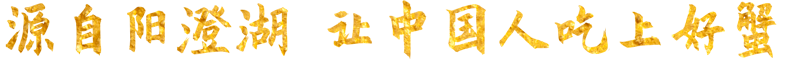

一家专业做全产业链的大闸蟹平台

地铁出行:
5号线和平里北街站A2口出 步行800米
公交出行:
小黄庄站：75路、119路、123路 步行10米
驾车出行:
安定门内大街-东城店：行驶870米直行进入安定门桥，行驶150米直行进入安定门外大街，行驶1.3公里右转进入安定门外大街辅路，行驶90米右转进入青年沟路，行驶130米到达
安定门桥-东城店：行驶90米直行进入安定门东大街，行驶10米，进入安定门桥靠右前方行驶230米，直行进入安定门外大街，行驶1.3公里右转进入安定门外大街铺路，行驶90米右转进入青年沟路，行驶130米到达